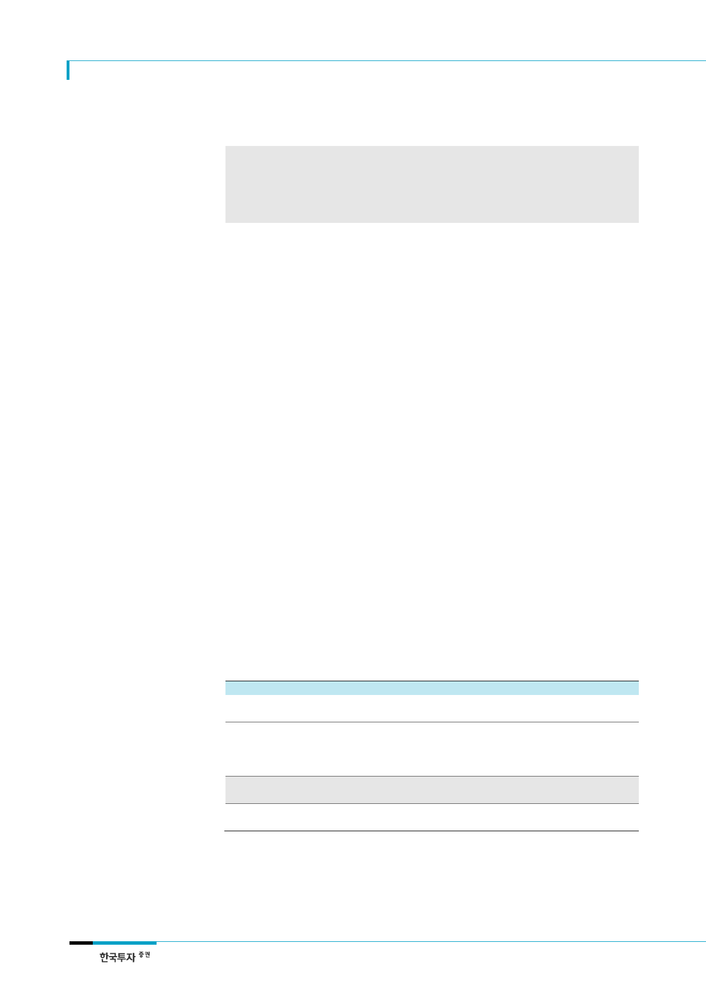

대한항공(003490)
현재주가 대비
22% 상승여력
한진해운 리스크 해소
항공 대장주의 귀환
리레이팅의 관건은
본업의 이익
리포트 작성 목적
우리나라 1위 국적사 대한항공 ‘매수’ 추천으로 분석 재개
대한항공에 대한 시장 신뢰가 회복되면서 투자관점의 변화 필요성 분석. 국제선여객 수요 증가
가 주가 리레이팅의 관건이며 유가와 원/달러 환율 상승 우려를 불식시킬 수 있을 것
국제선 여객과 화물수송의 수급 개선으로 탑승률과 운임의 동반 상승 가능성 점검
I. Valuation
제자리를 되찾은 항공산업 맏형, ‘매수’ 추천
대한항공에 대해 목표주가 44,000원으로 분석을 재개한다. 목표주가는 2017F BPS에 목
표 PBR 1.5배를 적용해 산출했다. 목표 PBR은 2017~2019F 평균 ROE 19.7%를 자기자
본비용 12.7%로 나누어 구했다(표 1 참조). 아시아 대형항공사(Full Service Carrier:
FSC) 피어의 평균은 1.1배에 불과하나, 대한항공은 장거리노선 중심의 수요기반이 안정
적이고 영업이익률과 ROE 등 수익성이 높은 점을 감안할 때 프리미엄은 타당하다.
대한항공은 우리나라 항공여객 시장점유율 26%(2016년 기준)의 1위 항공사다. 그러나 저
비용 항공사(Low Cost Carrier: LCC)와의 경쟁이 심화되는 가운데 높은 외화차입 의존도
와 한진해운 지원으로 4년 연속 적자를 기록하며 증시에서 항공시장의 맏형 역할을 제대
로 하지 못 했다. 작년 사상 최대 영업이익을 달성하고도 연평균 주가는 전년대비 25% 하
락했다. 이제 한진해운 리스크가 사라졌고 연초 유상증자로 부채비율은 당분간 우려할 필
요가 없는 수준으로 낮아졌다. LCC가 진출하지 못 하는 미주와 유럽노선 수요가 증가하고
있어 장거리 경쟁력이 높은 대한항공에 대한 투자심리가 개선되고 있다.
이제 주가는 본업의 이익에 좌우될 것이다. 과거와 다르게 국제선 여객과 화물 수요 증가
가 운임 반등으로 이어질 전망이다. 또 한진해운 지원으로 손상차손과 재무적 부담이 컸
던 작년보다 영업외수지도 크게 개선될 것이다. 유가 상승에도 수요기반이 탄탄한데다가
2분기 유가와 환율은 다시 하락했다. 올해 투자의 가시거리가 점차 늘어나 대한항공 주가
는 국제선 여객수요의 성장과 함께 글로벌 경기회복 기대감을 반영할 수 있을 것이다.
<표 1> 목표주가 44,000원 제시
구분
BPS(A)
ROE(B)
자기자본비용(C=D+(E-D)*F)
무위험수익률(D)
시장기대수익률(E)
베타(F)
목표 PBR(G=B/C)
목표주가(A*I)
현재주가
상승여력
자료: 한국투자증권
내용
28,530
19.7
12.7
1.7
10.0
1.3
1.5
44,053
36,100
21.9%
비고
2017F BPS
2017~19F ROE 평균
국고채 3년 기준
KIS 유니버스 2017F PER 10.0배의 역수
52주 베타
6월 5일 종가
(단위: 원, %, 배)
2